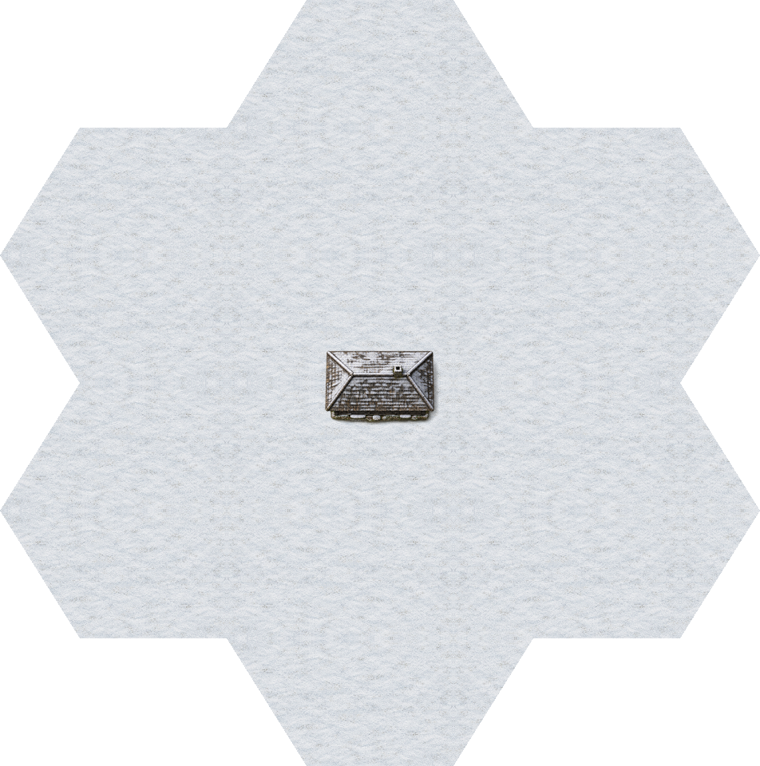
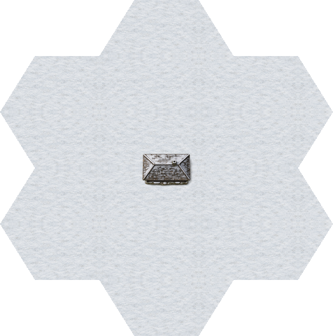
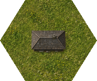
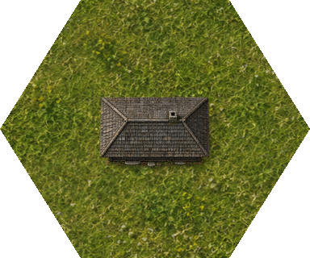
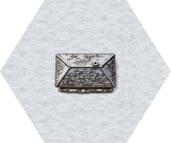
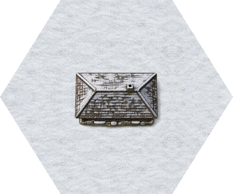

hamlet-summer


Runtime line parity 0


Runtime line parity 1


Current scene refresh · 2026-10-20: RefDesign materials and rebuild details · Current art and generation prompts · PULSE: DOS / Amiga, 1× / 2× / 4× and game captures.
A compact timber hut: newly illustrated overhead artwork at 2× and 4×, with shared seasonal ground and complementary hex cuts.
RefDesign summer and winter masters replace the earlier cottage group. The rebuilt hut and shared ground are integrated into the game and PULSE; final user visual approval remains open.
Review and verification · Geometry · Terrain · Manifest








